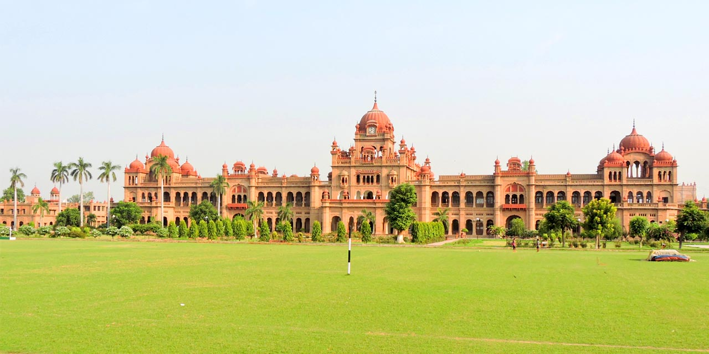

Golden Temple
The Golden Temple, also known as Harmandir Sahib, is the holiest Gurdwara of Sikhism. It is renowned for its stunning architecture and spiritual significance.
Fun Fact:
~The temple is covered in real gold leaf, giving it its iconic golden appearance!
Things to Explore at Golden Temple:
-
Langar Hall:
Experience the community kitchen serving free meals to thousands daily.
-
Sarovar:
Take a peaceful walk around the sacred water tank surrounding the temple.
-
Akal Takht:
Visit the highest seat of earthly authority of the Khalsa.
-
Evening Ceremony:
Witness the mesmerizing Palki Sahib ceremony in the evening.
Why Visit Golden Temple?
!Because it’s not just a temple; it’s a symbol of peace, unity, and spirituality that transcends boundaries.
Jallianwala Bagh
Jallianwala Bagh is a historical garden and memorial dedicated to the victims of the Jallianwala Bagh massacre in 1919. It serves as a poignant reminder of India's struggle for independence.
Fun Fact:
~The garden has a well-preserved bullet-marked wall that tells the story of the tragic event!
Things to Explore at Jallianwala Bagh:
-
Martyrs' Memorial:
Pay homage to the martyrs who lost their lives during the massacre.
-
Historical Significance:
Learn about the events leading up to the massacre through informative plaques.
-
Peaceful Gardens:
Enjoy a serene walk through the beautifully landscaped gardens.
-
Museum:
Visit the museum that houses artifacts and photographs from that tragic day.
Why Visit Jallianwala Bagh?
!Because it’s not just a garden; it’s a place of remembrance and reflection on India’s fight for freedom.
Partition Museum
The Partition Museum is dedicated to the memory of the millions affected by the partition of India in 1947. It houses a vast collection of artifacts, photographs, and personal stories.
Fun Fact:
~It is the first museum in the world dedicated to the partition of India!
Things to Explore at Partition Museum:
-
Personal Stories:
Read heart-wrenching personal accounts of those who lived through the partition.
-
Artifacts:
Explore a vast collection of items from that era, including letters, photographs, and belongings.
-
Interactive Exhibits:
Engage with interactive displays that bring history to life.
-
Educational Programs:
Participate in workshops and discussions on the impact of partition.
Why Visit Partition Museum?
!Because it’s not just a museum; it’s a place that honors the resilience and courage of those who endured one of history’s most traumatic events.
Wagah Border
The Wagah Border is the international border between India and Pakistan, famous for its daily flag-lowering ceremony. It’s a symbol of patriotism and unity.
Fun Fact:
~The ceremony attracts thousands of spectators from both sides of the border!
Things to Explore at Wagah Border:
-
Flag Ceremony:
Witness the spectacular flag-lowering ceremony performed by the BSF and Pakistan Rangers.
-
Patriotic Atmosphere:
Experience the electrifying atmosphere filled with patriotic fervor.
-
Border Gates:
See the gates that separate the two nations and learn about their significance.
-
Cultural Exchange:
Interact with visitors from both countries and share stories of unity.
Why Visit Wagah Border?
!Because it’s not just a border; it’s a place where patriotism meets camaraderie, transcending national boundaries.
Gobindgarh Fort
Gobindgarh Fort is a historic fort that has been transformed into a cultural hub. It offers a glimpse into Punjab’s rich history and heritage.
Fun Fact:
~The fort was originally built in the 18th century and has witnessed many historical events!
Things to Explore at Gobindgarh Fort:
-
Light and Sound Show:
Enjoy an immersive light and sound show that narrates the fort’s history.
-
Heritage Walks:
Take guided tours to explore the fort’s architecture and historical significance.
-
Cultural Performances:
Experience traditional Punjabi music and dance performances.
-
Museum:
Visit the museum showcasing artifacts from Punjab’s glorious past.
Why Visit Gobindgarh Fort?
!Because it’s not just a fort; it’s a living testament to Punjab’s vibrant culture and history.
Durgiana Temple
Durgiana Temple is a famous Hindu temple dedicated to Goddess Durga. It is known for its stunning architecture and spiritual ambiance.
Fun Fact:
~The temple’s architecture resembles that of the Golden Temple, making it a visual delight!
Things to Explore at Durgiana Temple:
-
Sacred Shrines:
Visit the various shrines dedicated to different deities within the temple complex.
-
Spiritual Atmosphere:
Experience the serene and peaceful environment perfect for meditation.
-
Festivals:
Participate in vibrant festivals celebrated with great enthusiasm.
-
Architectural Marvel:
Admire the intricate carvings and beautiful frescoes adorning the temple walls.
Why Visit Durgiana Temple?
!Because it’s not just a temple; it’s a place where spirituality meets architectural beauty, offering a unique experience for visitors.

Ram Bagh
Ram Bagh is a historic garden and one of the oldest Mughal gardens in India. It offers a serene escape from the bustling city life.
Fun Fact:
~It was built by Maharaja Ranjit Singh, the founder of the Sikh Empire!
Things to Explore at Ram Bagh:
-
Mughal Architecture:
Admire the beautiful Mughal-style architecture and lush greenery.
-
Historical Significance:
Learn about the history of the garden and its connection to Maharaja Ranjit Singh.
-
Peaceful Walks:
Enjoy peaceful walks along the pathways surrounded by blooming flowers.
-
Picnic Spots:
Relax and have a picnic in designated areas within the garden.
Why Visit Ram Bagh?
!Because it’s not just a garden; it’s a historical oasis that offers tranquility and beauty amidst the chaos of city life.

Khalsa College
Khalsa College is a prestigious educational institution known for its stunning architecture and rich history. It is a symbol of Sikh education and culture.
Fun Fact:
~The college’s architecture is inspired by the Indo-Saracenic style, making it a visual treat!
Things to Explore at Khalsa College:
-
Architectural Marvel:
Admire the grand buildings and lush green campus that reflect Sikh heritage.
-
Historical Significance:
Learn about the college’s role in promoting education among Sikhs.
-
Cultural Events:
Participate in various cultural and academic events held throughout the year.
-
Library:
Visit the well-stocked library that houses a vast collection of books and manuscripts.
Why Visit Khalsa College?
!Because it’s not just an educational institution; it’s a place where history, culture, and knowledge converge, offering a unique experience for visitors.